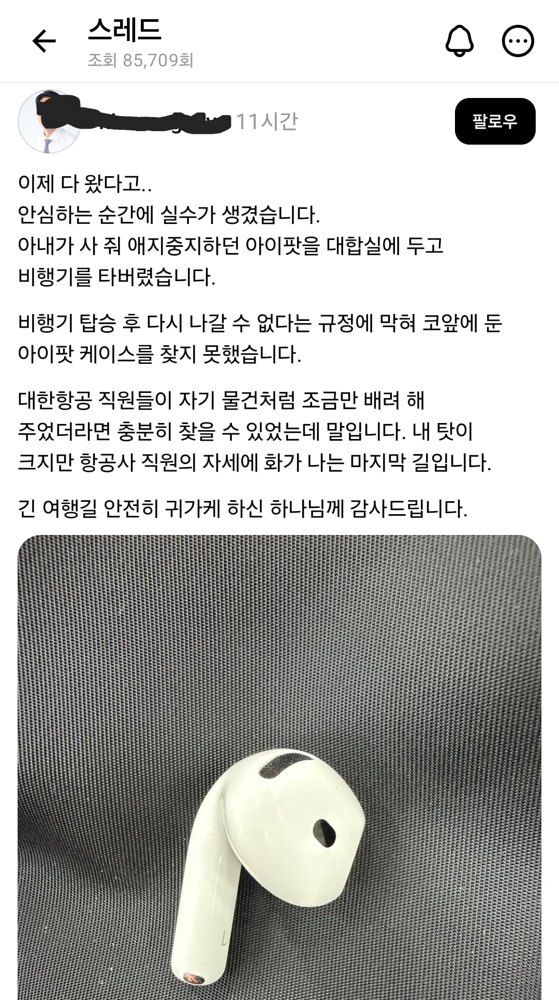

내가 잃어버렸지만 대한항공 시발놈들이요
아멘

내가 잃어버렸지만 대한항공 시발놈들이요
아멘

'진상은 지가 진상인지 모른다'
통쾌했어요
조금만 배려 이지랄
배려 뜻이 바뀌었나? 저런 경우에 말할 수 있는 단어가 아닐 텐데?
지 중심으로 세상돌아가는놈들 특임
저런놈이 믿는 신이라면 당연히 악신이겠지.
하나님 하는 꼬라지보니
흔한 개독마인드네
병신 개독
그 규정 또한 하나님의 깊은 뜻임을 모르고 대항항공 직원들을 탓하능거 보니 저놈 저거 사탄들렸네
실수는 본인이 하고
화는 항공사 직원에게 나고
감사는 하나님께

지옥가겠네 ㅋ
병신들은 답도 없다
아이팟 아님
대한항공 잘못 아님
사람이 아님 ㅋㅋㅋ
아이팟도 아냐?
레전드네
교회다니는 사람 특 : 지만 옳고 맞음
스레드했네
퍼스트 프레스티지석 탔으면 알아서 연락오는데
이코노미는 그런거 없음ㅋㅋ
예수가 이렇게 남욕하고 저격하라고 가르치든? ㅋㅋㅋㅋㅋㅋㅋㅋㅋㅋㅋㅋ 네 이웃이나 사랑해라
역시 예수쟁이
그냥 개신교 욕하면 대충맞다
ㅋㅋㅋ하나님 ㅋㅋㅋㅋㅋ
하나님한테 에어팟 순간이동 시켜달라고 기도나 하지
ㅋㅋ 제주항공은 대합실에서 폰 찾아다 주던데
에어팟이라 안찾아다 줬나
ㅈ같은건 성당인척하려고 하느님이라고 섞어적더라 꼭ㅋㅋㅋ
느그 하나님한테 하나 사달라 해라
? 저거 드립이 아니고 진심으로 하는 말들이야 저게??
남한 의사들이 북한에 의료 봉사하러가서 북괴 밑에서 준실명 상태가 된 할아버지 수술해서 앞이 보이니까 영정사진 보면서 수령님 감사합니다 하는거랑 기독교랑 뭐가 다름?
'개'